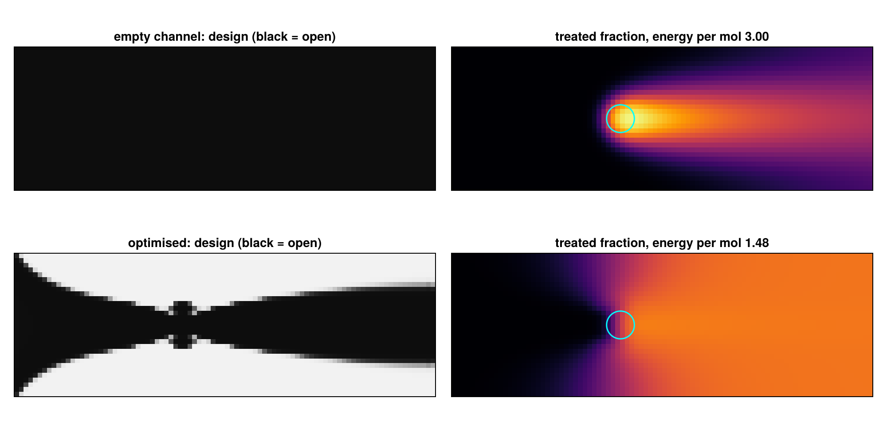
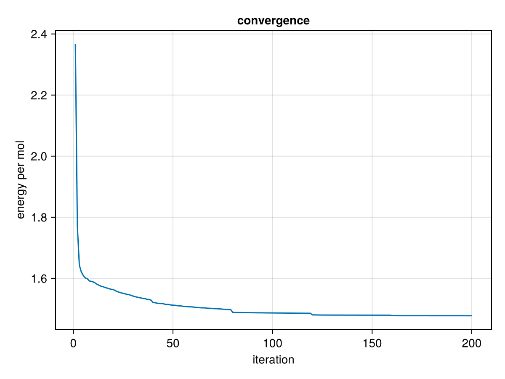

Outlook: topology optimisation of a toy plasma reactor
The same mathematics as in EIT (the conductivity equation, adjoint gradients, a parametrisation of the unknown) can design devices instead of imaging them. This page is a deliberately small illustration of the proposal in Plasma Nitrogen Fixation as a Moonshot: in plasma reactors for nitrogen fixation most of the gas bypasses the arc, so the energy per mol of fixed nitrogen is far higher than necessary. Can a gradient-based topology optimisation find a channel that routes the gas through the arc, without being told how?
The toy. A 2D channel with a fixed arc: a small hot zone that converts the gas flowing through it. The gas flows through a porous medium whose permeability is the design (Darcy flow, a standard setting for topology optimisation of flow paths). What is not modelled: the arc physics (Joule heating, the arc moving with the flow, magnetic fields), real chemistry and back-reactions, turbulence. The numbers are dimensionless.
This page is generated from examples/toy_plasma_reactor.jl and is also available as a Jupyter notebook.
using ModularEIT, Ferrite, SparseArrays, LinearAlgebra, Random, Printf
using CairoMakieModel
On the channel $\Omega = (0, 3) \times (0, 1)$:
\[\begin{aligned} -\nabla\cdot\big(K(\rho)\nabla p\big) &= 0, & u &= -K(\rho)\nabla p &&\text{Darcy flow, inflow flux 1 at the left, } p = 0 \text{ at the right},\\ -D\,\Delta c + u\cdot\nabla c &= \kappa(x)\,(1 - c), & c &= 0 \text{ at the inlet} &&\text{treated fraction of the gas}. \end{aligned}\]
The flow equation is the conductivity equation with the permeability $K$ as conductivity, so ModularEIT's ConductivityTensor assembles it and tensor_gradient! differentiates it. The arc converts gas at the rate $\kappa(x)(1-c)$, a Gaussian hot zone, so the production rate is $J = \int\kappa\,(1 - c)\,\mathrm dx$ per unit flow. At fixed arc power and flow, the energy per mol is
\[E = \frac{P_\text{arc} + P_\text{pump}}{J}, \qquad P_\text{pump} = Q\,\Delta p ,\]
with the pumping power normalised to 1 % of the arc power for the empty channel.
Lx, Ly, nx, ny = 3.0, 1.0, 90, 30
grid = generate_grid(Quadrilateral, (nx, ny), Ferrite.Vec(0.0, 0.0), Ferrite.Vec(Lx, Ly))
disc = FerriteDiscretization(grid) # P1 for p and c, P0 for the design
dh, cv, nb = disc.dh_u, disc.cv_u, getnbasefunctions(disc.cv_u)
n, ncell = ndofs(dh), getncells(grid)
function facet_dofs(name)
ch = ConstraintHandler(dh)
add!(ch, Dirichlet(first(Ferrite.getfieldnames(dh)), getfacetset(grid, name), x -> 0.0))
close!(ch)
return ch.prescribed_dofs
end
inlet, outlet = facet_dofs("left"), facet_dofs("right")
free_p, free_c = setdiff(1:n, outlet), setdiff(1:n, inlet)
b = zeros(n)
assemble_boundary_load!(b, dh, disc.fv_u, getfacetset(grid, "left")) # inflow: flux 1, Q = 1
Q = 1.0
D, κ0, xa, wa = 0.02, 40.0, (1.2, 0.5), 0.1
κ(x) = κ0 * exp(-((x[1] - xa[1])^2 + (x[2] - xa[2])^2) / wa^2);The design-independent part of the transport operator, $D\,S + M_\kappa$, and the load $f_i = \int\kappa\,\varphi_i$:
cellσ = [celldofs(disc.dh_σ, e)[1] for e in 1:ncell] # design dof of every cell
centres = Vector{Ferrite.Vec{2, Float64}}(undef, ncell)
S0, f = allocate_matrix(dh), zeros(n)
let asm = start_assemble(S0), Ke = zeros(nb, nb)
for cell in CellIterator(dh)
reinit!(cv, cell)
xs, cd = getcoordinates(cell), celldofs(cell)
centres[cellσ[cellid(cell)]] = sum(xs) / length(xs)
fill!(Ke, 0)
for q in 1:getnquadpoints(cv)
dΩ, kx = getdetJdV(cv, q), κ(spatial_coordinate(cv, q, xs))
for i in 1:nb
f[cd[i]] += kx * shape_value(cv, q, i) * dΩ
for j in 1:nb
Ke[i, j] += (D * (shape_gradient(cv, q, i) ⋅ shape_gradient(cv, q, j)) +
kx * shape_value(cv, q, i) * shape_value(cv, q, j)) * dΩ
end
end
end
assemble!(asm, cd, Ke)
end
endDesign parametrisation
One density $\rho_e\in[0,1]$ per cell, smoothed by a density filter $W$ (radius 1.5 cells) and sharpened by a Heaviside projection $H_\beta$, and the permeability $K = K_\text{min} + (1 - K_\text{min})\,H_\beta(W\rho)^3$: open where $\rho = 1$, nearly closed where $\rho = 0$. This is the pixel parametrisation of a reconstruction (see Parametrizations of the Conductivity), with the filter as regulariser.
rf, Kmin, ε = 1.5 * Lx / nx, 1e-3, 0.01 / 3 # ε: pumping of the empty channel = 1 %
W = let I = Int[], J = Int[], V = Float64[]
for a in 1:ncell, c in 1:ncell
d = norm(centres[a] - centres[c])
d < rf && (push!(I, a); push!(J, c); push!(V, rf - d))
end
Wr = sparse(I, J, V, ncell, ncell)
Diagonal(1 ./ vec(sum(Wr; dims = 2))) * Wr
end
β = Ref(1.0)
heaviside(x) = (tanh(β[] / 2) + tanh(β[] * (x - 0.5))) / (2tanh(β[] / 2))
dheaviside(x) = β[] * (1 - tanh(β[] * (x - 0.5))^2) / (2tanh(β[] / 2))
permeability(r) = Kmin + (1 - Kmin) * r^3
dpermeability(r) = 3 * (1 - Kmin) * r^2;State and objective
The flow matrix comes from the conductivity tensor. The advection matrix $\int\varphi_i\,u\cdot\nabla\varphi_j$ needs the Darcy velocity at the quadrature points.
ct = ConductivityTensor(disc)
A = copy(ct.pattern)
function advection(K, p)
Adv = allocate_matrix(dh)
asm, Ke = start_assemble(Adv), zeros(nb, nb)
for cell in CellIterator(dh)
reinit!(cv, cell)
fill!(Ke, 0)
pe, Kc = p[celldofs(cell)], K[cellσ[cellid(cell)]]
for q in 1:getnquadpoints(cv)
u, dΩ = -Kc * function_gradient(cv, q, pe), getdetJdV(cv, q)
for i in 1:nb, j in 1:nb
Ke[i, j] += shape_value(cv, q, i) * (u ⋅ shape_gradient(cv, q, j)) * dΩ
end
end
assemble!(asm, celldofs(cell), Ke)
end
return Adv
end
function solve_state(ρ)
ρf = W * ρ
ρ̃ = heaviside.(ρf)
K = permeability.(ρ̃)
assemble_weighted_stiffness!(A, ct, K)
p = zeros(n)
p[free_p] = A[free_p, free_p] \ b[free_p]
T = S0 + advection(K, p)
c = zeros(n)
c[free_c] = T[free_c, free_c] \ f[free_c]
J = (sum(f) - f ⋅ c) / Q # production
Ppump = ε * (b ⋅ p) # Q Δp, relative to the arc power
return (; ρf, ρ̃, K, p, c, T, J, Ppump, E = (1 + Ppump) / J)
end;Adjoint gradient
The discrete adjoint, in three steps:
- transport adjoint $T^\top\lambda = f/Q$, so that $\mathrm dJ = \lambda^\top(\mathrm dT)\,c$;
- the advection term $\lambda^\top\mathrm{Adv}\,c = -\sum_e K_e\int_e\lambda\,\nabla p\cdot\nabla c$ depends on $K$ directly and through the pressure: the flow adjoint $A\mu = h$ with $h = \partial(\lambda^\top\mathrm{Adv}\,c)/\partial p$;
- $\partial J/\partial K_e = -\int_e\lambda\,\nabla p\cdot\nabla c - \int_e\nabla\mu\cdot\nabla p$, where the second term is
tensor_gradient!, exactly as in the adjoint state method of EIT; the pumping power $b^\top p$ is self-adjoint ($\mu = p$).
Then the chain rule through $K$, the projection and the filter.
function gradient(ρ, s = solve_state(ρ))
(; ρf, ρ̃, K, p, c, T) = s
λ = zeros(n)
λ[free_c] = T[free_c, free_c]' \ (f[free_c] ./ Q)
gK, h = zeros(ncell), zeros(n)
for cell in CellIterator(dh)
reinit!(cv, cell)
cd = celldofs(cell)
e = cellσ[cellid(cell)]
pe, ce, λe = p[cd], c[cd], λ[cd]
for q in 1:getnquadpoints(cv)
dΩ = getdetJdV(cv, q)
∇p, ∇c, λq = function_gradient(cv, q, pe), function_gradient(cv, q, ce), function_value(cv, q, λe)
gK[e] -= λq * (∇p ⋅ ∇c) * dΩ
for a in 1:nb
h[cd[a]] -= K[e] * λq * (∇c ⋅ shape_gradient(cv, q, a)) * dΩ
end
end
end
μ = zeros(n)
μ[free_p] = A[free_p, free_p] \ h[free_p]
tensor_gradient!(gK, ct, μ, p; α = -1, β = 1) # dJ/dK
gP = zeros(ncell)
tensor_gradient!(gP, ct, p, p; α = -ε) # d(ε bᵀp)/dK
gE = (-(1 + s.Ppump) .* gK ./ s.J .+ gP) ./ s.J # dE/dK
return W' * (gE .* dpermeability.(ρ̃) .* dheaviside.(ρf))
end;Check against central finite differences in a random direction:
ρ0 = fill(0.4, ncell)
δ = randn(MersenneTwister(1), ncell)
fd = (solve_state(ρ0 .+ 1e-5 .* δ).E - solve_state(ρ0 .- 1e-5 .* δ).E) / 2e-5
(adjoint = gradient(ρ0) ⋅ δ, finite_difference = fd)(adjoint = -0.736870733452088, finite_difference = -0.7368707222621395)Optimisation
Projected gradient descent on the energy per mol, with the open volume fixed to 40 % (the projection onto $\{0\le\rho\le1,\ \mathrm{mean}(\rho) = 0.4\}$ is a bisection), a backtracking step size, and the projection sharpened ($\beta$ doubled) every 40 iterations.
function project(ρ, V)
lo, hi = -1.0, 1.0
for _ in 1:60
η = (lo + hi) / 2
sum(clamp.(ρ .- η, 0, 1)) / length(ρ) > V ? (lo = η) : (hi = η)
end
return clamp.(ρ .- (lo + hi) / 2, 0, 1)
end
function optimise(ρ; V = 0.4, iterations = 200)
s, α, history = solve_state(ρ), 0.2, Float64[]
for it in 1:iterations
if it % 40 == 0 && β[] < 16
β[] *= 2
s, α = solve_state(ρ), 0.2
end
g = gradient(ρ, s)
while α > 1e-4
ρn = project(ρ .- α .* g ./ maximum(abs, g), V)
sn = solve_state(ρn)
if sn.E < s.E
ρ, s, α = ρn, sn, min(1.5α, 0.5)
break
end
α /= 2
end
push!(history, s.E)
end
return ρ, s, history
end
ρ, s, history = optimise(copy(ρ0))
empty = solve_state(ones(ncell))
(energy_per_mol_empty = empty.E, optimised = s.E, improvement = empty.E / s.E,
pumping_empty = empty.Ppump, pumping_optimised = s.Ppump)(energy_per_mol_empty = 2.9959544858101457, optimised = 1.4776359117316435, improvement = 2.0275322642227764, pumping_empty = 0.00999999999999619, pumping_optimised = 0.02853524319001118)Result
function cell_image(v)
M = zeros(nx, ny)
for e in 1:ncell
x = centres[e]
M[clamp(ceil(Int, x[1] / Lx * nx), 1, nx), clamp(ceil(Int, x[2] / Ly * ny), 1, ny)] = v[e]
end
return M
end
cell_of = invperm(cellσ) # design dof → cell
node_image(v) = cell_image([sum(v[celldofs(dh, cell_of[e])]) / 4 for e in 1:ncell])
fig = Figure(size = (1000, 480))
xs, ys = range(0, Lx; length = nx), range(0, Ly; length = ny)
arc = [(xa[1] + wa * cos(t), xa[2] + wa * sin(t)) for t in range(0, 2π; length = 60)]
for (row, st, name) in ((1, empty, "empty channel"), (2, s, "optimised"))
ax = Axis(fig[row, 1]; title = "$name: design (black = open)", aspect = DataAspect())
hidedecorations!(ax)
heatmap!(ax, xs, ys, cell_image(st.ρ̃); colormap = Reverse(:grays), colorrange = (0, 1))
ax = Axis(fig[row, 2]; title = @sprintf("treated fraction, energy per mol %.2f", st.E), aspect = DataAspect())
hidedecorations!(ax)
heatmap!(ax, xs, ys, node_image(st.c); colormap = :inferno, colorrange = (0, 1))
lines!(ax, first.(arc), last.(arc); color = :cyan)
end
fig
In the empty channel most of the gas passes above and below the arc (circle) and leaves untreated; the gas that does pass the arc is over-treated. The optimiser, starting from a uniform design and told nothing about the geometry, closes the channel above and below the arc and leaves a converging–diverging nozzle whose throat is the arc: all the gas is treated once, the energy per mol halves, and the pumping power stays at a few percent of the arc power.
lines(history; axis = (xlabel = "iteration", ylabel = "energy per mol", title = "convergence"))
What a real study needs
- The arc itself: current continuity with a temperature-dependent conductivity, Joule heating, the energy equation and the arc blown by the flow. The electrical part is the conductivity equation of EIT again, now with a strongly nonlinear coefficient.
- Compressible or low-Mach flow instead of Darcy flow, and turbulence.
- Chemistry with back-reactions and quenching, which makes the region behind the arc as important as the arc.
- Unsteady arcs and time-averaged objectives, calibration against experiments (an inverse problem), and fast surrogates.
The structure stays the same: a state equation, an objective, one adjoint solve per state equation, and a parametrised, regularised design.